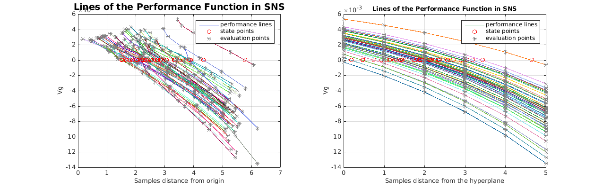

TutorialCantileverBeamMatlabReliabilityAnalysis
The documentation and the problem description of this example is available on the User Manual -> Tutorials -> Cantilever_Beam
See Also http://cossan.cfd.liv.ac.uk/wiki/index.php/Cantilever_Beam
Copyright 2006-2014: COSSAN working group
Author: Edoardo-PatelliInstitute for Risk and Uncertainty, University of Liverpool, UK
COSSAN web site: http://www.cossan.co.uk
This file is part of openCOSSAN. The open source general purpose matlab toolbox for numerical analysis, risk and uncertainty quantification (http://www.cossan.co.uk).
openCOSSAN is free software: you can redistribute it and/or modify it under the terms of the GNU General Public License as published by the Free Software Foundation, either version 3 of the License. openCOSSAN is distributed in the hope that it will be useful, but WITHOUT ANY WARRANTY; without even the implied warranty of MERCHANTABILITY or FITNESS FOR A PARTICULAR PURPOSE. See the GNU General Public License for more details. You should have received a copy of the GNU General Public License along with openCOSSAN. If not, see http://www.gnu.org/licenses/".
Contents
Require input
This tutorial requires the Model create by the tutorial TutorialCantileverBeamMatlab
assert(logical(exist('XmodelBeamMatlab','var')),'openCOSSAN:Tutorial', ... 'Please run first the tutorial TutorialCantileverBeamMatlab') % Reset the random number generator in order to obtain always the same results. % DO NOT CHANGE THE VALUES OF THE SEED OpenCossan.resetRandomNumberGenerator(51125);
Define a Probabilistic Model
Performance Function
Xperfun = PerformanceFunction('Sdemand','w','Scapacity','maxDiplacement','Soutputname','Vg'); % Define a Probabilistic Model XprobModelBeamMatlab=ProbabilisticModel('Xmodel',XmodelBeamMatlab,'XperformanceFunction',Xperfun);
Reliability Analysis via Monte Carlo Sampling
The Monte Carlo simulation is used here to estimate the failure probability
% Compute Reference Solution Xmc=MonteCarlo('Nsamples',1e4,'Nbatches',1); % Run Reliability Analysis XfailireProbMC=Xmc.computeFailureProbability(XprobModelBeamMatlab); % Show the estimated failure probability display(XfailireProbMC); % Validate Solution assert(abs(XfailireProbMC.pfhat-7.38e-02)<eps,... 'CossanX:Tutorials:CantileverBeam','Reference Solution pf MCS not matched.')
[Status:Evaluator ] * Processing solver 1/1 [Simulation:exportResults] Writing partial results (SimulationData_batch_1_of_1) on the folder: /home/ep/Documents/MATLAB/20140729T155213 Maximum no. of samples reached. Samples computed 10000; Maximum allowed samples: 10000 =================================================================== FailureProbability Object - Description: =================================================================== * Results obtained with MonteCarlo method ** First Moment *** Pfhat = 7.380e-02 *** Std = 2.615e-03 *** CoV = 3.543e-02 ** Second Moment *** variance = 6.836e-02 ** Simulation details *** # samples = 1.000e+04 *** # batches = 1 *** # lines = 0 *** Exit Flag = Maximum no. of samples reached. Samples computed 10000; Maximum allowed samples: 10000
Reliability Analysis via Latin Hypercube Sampling
Definition of the Simulation object
Xlhs=LatinHypercubeSampling('Nsamples',1e3); % Run Reliability Analysis XfailireProbLHS=Xlhs.computeFailureProbability(XprobModelBeamMatlab); % Show the estimated failure probability display(XfailireProbLHS); % Validate Solution assert(abs(XfailireProbLHS.pfhat-8.30e-02)<eps,... 'CossanX:Tutorials:CantileverBeam','Reference Solution pf LHS not matched.')
calling lhsdesign * Nsamples: 1000 * Nrv: 4 * iteration: 5 * criterion: none * smooth: on [Status:Evaluator ] * Processing solver 1/1 [Simulation:exportResults] Writing partial results (SimulationData_batch_1_of_1) on the folder: /home/ep/Documents/MATLAB/20140729T155214 Maximum no. of samples reached. Samples computed 1000; Maximum allowed samples: 1000 =================================================================== FailureProbability Object - Description: =================================================================== * Results obtained with LatinHyperCubeSampling method ** First Moment *** Pfhat = 8.300e-02 *** Std = 8.729e-03 *** CoV = 1.052e-01 ** Second Moment *** variance = 7.619e-02 ** Simulation details *** # samples = 1.000e+03 *** # batches = 1 *** # lines = 0 *** Exit Flag = Maximum no. of samples reached. Samples computed 1000; Maximum allowed samples: 1000
Reliability Analysis via LineSampling
Line Sampling requires the definition of the so-called important direction. It can be computed usig the sensitivity method. For instance here the Local Sensitivity Analysis is computed.
XlsFD=LocalSensitivityFiniteDifference('Xmodel',XprobModelBeamMatlab,'Coutputname',{'Vg'}); display(XlsFD) % Compute the LocalSensitivityMeasure XlocalSensitivity = XlsFD.computeIndices; OpenCossan.resetRandomNumberGenerator(49564); % Use sensitivity information to define the important direction for LineSampling XLS=LineSampling('XlocalSensitivityMeasures',XlocalSensitivity,'Nlines',50); % Run Analysis [XfailireProbLS, Xout]=XLS.computeFailureProbability(XprobModelBeamMatlab); % Show Results display(XfailireProbLS); display(Xout); % Validate Solution assert(abs(XfailireProbLS.pfhat-6.085e-002)<2e-5,... 'CossanX:Tutorials:CantileverBeam',... 'Estimated failure probability (%e) does not match the reference Solution (%e)',... XfailireProbLS.pfhat,6.1e-002)
=================================================================== LocalSensitivityFiniteDifference Object - Description: =================================================================== * Sensitivity for model object of class ProbabilisticModel * Sensitivity for output variables: Vg * Sensitivity for input variables P h rho E * Reference Point: 5.000e+03 2.400e-01 6.000e+02 1.000e+10 [Status:Evaluator ] * Processing solver 1/1 [Status:Evaluator ] * Processing solver 1/1 [LineSampling:pf] Start LineSampling analysis 50 lines created [Status:Evaluator ] * Processing solver 1/1 Line:49is entirely in the failure domain Intersection with the limit state function not found. Line:49 [Simulation:exportResults] Writing partial results (SimulationData_batch_1_of_1) on the folder: /home/ep/Documents/MATLAB/20140729T155214 Maximum no. of samples reached. Samples computed 300; Maximum allowed samples: 300 =================================================================== FailureProbability Object - Description: =================================================================== * Results obtained with LineSampling method ** First Moment *** Pfhat = 6.085e-02 *** Std = 1.276e-02 *** CoV = 2.096e-01 ** Second Moment *** variance = NaN ** Simulation details *** # samples = 3.000e+02 *** # batches = 1 *** # lines = 50 *** Exit Flag = Maximum no. of samples reached. Samples computed 300; Maximum allowed samples: 300 =================================================================== LineSamplingData Object - Description: =================================================================== * Number of Variables: 4 * Number of Batches: 1 * Exit Flag: Maximum no. of samples reached. Samples computed 300; Maximum allowed samples: 300 * Number of processed lines: 50 * Number of lines: 50 * Number of lines crossing the state boundary: 49 * Total number of evaluations: 300
Plot Results
show lines
f1=Xout.plotLines;
Close figure
close(f1); % % Line Sampling with adaptive method (under development) % XLS=LineSampling('XlocalSensitivityMeasures',XlocalSensitivity,'Nlines',20,'Ladaptive',true); % XfailireProbLS2=XLS.computeFailureProbability(XprobModelBeamMatlab); % display(XfailireProbLS2); % % Validate Solution % assert(abs(XfailireProbLS2.pfhat-5.992e-02)<1e-4,... % 'CossanX:Tutorials:CantileverBeam',... % 'Estimated failure probability (%e) does not match the reference Solution (%e)',... % XfailireProbLS2.pfhat,5.992e-02)
Optimization
This tutorial continues with the optimization section See Also: TutorialCantileverBeamMatlabOptimization.html
% echodemo TutorialCantileverBeamMatlabOptimization
RELIABILITY BASED OPTIMIZAZION
The reliability based optimization is shown in the following tutotial See Also: TutorialCantileverBeamMatlabRBO.html
% echodemo TutorialCantileverBeamMatlabRBO